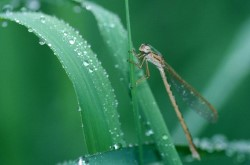

배길이 약 27mm, 뒷날개길이 약 21mm이다. 몸빛깔은 바탕색이 연한 갈색이고 진한 갈색 반점이 있다. 암수의 빛깔·무늬가 거의 같다. 머리는 진한 청동색이고 겹눈은 연한 살색 바탕에 진한 갈색 반점이 나 있다. 가슴 앞면 중앙의 구릿빛 띠 좌우에 돌기가 1개씩 있다. 배등판 제2∼7마디에는 구릿빛 무늬가 있고 배끝부속기는 연한 갈색이다. 날개는 투명하고 연한 갈색을 띠며 앞쪽 가장자리 부근은 짙다. 앞뒷날개를 접으면 다른 실잠자리와는 달리 앞뒤의 날개무늬가 겹치지 않고 앞뒤로 놓이게 된다.
4월부터 11월까지 볼 수 있고, 12월부터 다음 해 3월까지는 동면한다. 동면 중에도 기온이 높으면 잠시 잠을 깨어 활동하다가 다시 기온이 내려가면 몸을 풀줄기에 붙이고 다시 동면한다. 이렇게 성충으로 월동하므로 '한해를 묵는다'는 뜻에서 이런 이름이 비롯되었다.
유충은 몸길이 16∼18mm로 연한 갈색을 띠며 하천이나 농수로에서 산다. 유충시기는 2년 정도이고 우화한 후 11개월 정도를 더 산다. 계절변화가 뚜렷한 온대와 한대 지방에서 흔히 볼 수 있는데, 한국·일본·중국·중앙아시아·유럽에 분포한다. [네이버 지식백과] 묵은실잠자리 (두산백과 두피디아, 두산백과)